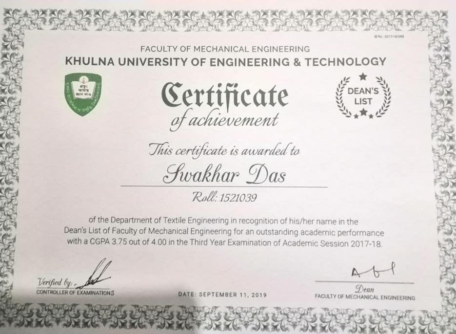
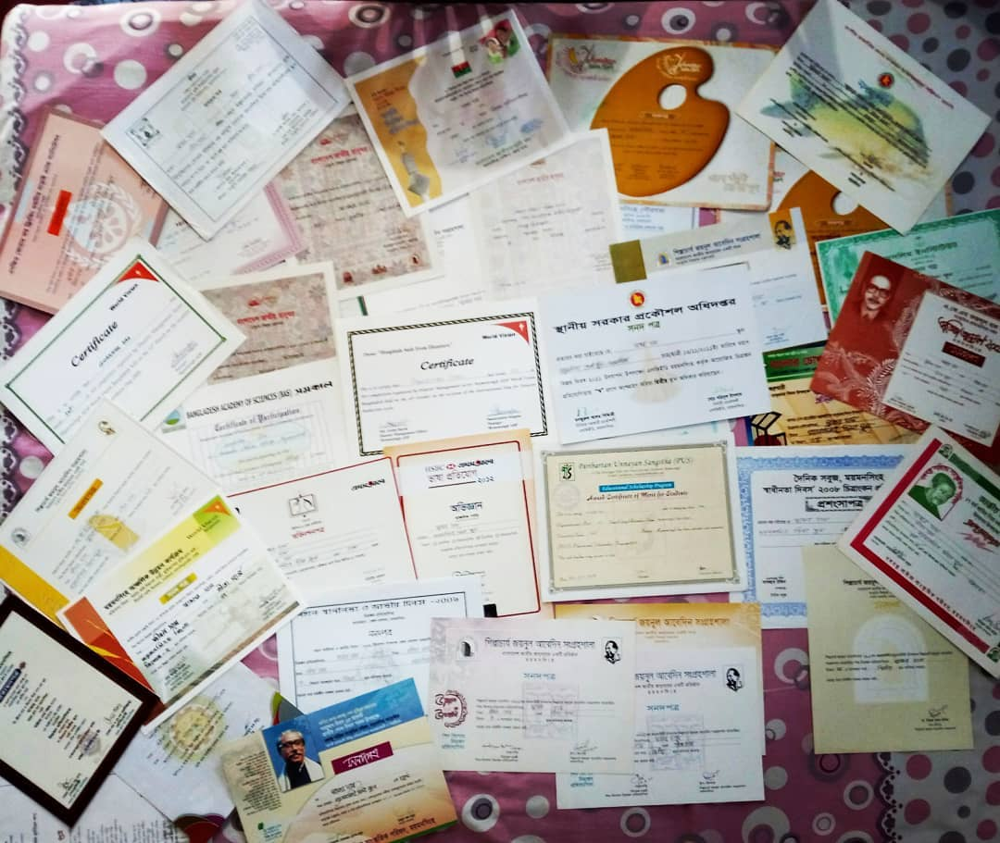

EDUCATION
1.Mymensingh Zilla School
2005-2012
Science, Result 5 out of 5
2.Govt. Ananda Mohon College, Mymensingh
2013-2015
Science, Result 5 out of 5
3.Khulna University of Engineering & Technology
2016-Present
[Bachelor of Science, Major in Wet Processing Engineering, Result 3.51 out of 4 till 7th semester, Final semester exam appeared]
EXPERIENCE
Project Experience:
2019-2020
“Development of E-textile oriented fabric & evaluating sensorial activities for both functional and aesthetic purpose with the utilization of conductive thread.”
Industrial Attachment/Internship:
Northern Corporation Limited
(A sister concern of Northern Tosrifa Group)
February 01- February 29
Areas Covered: Knitting section, Dyeing & Finishing section, Quality Control, Garments section, merchandising section.
Clifton Textile & Apparels ltd
3 November, 2019
Gathered practical knowledge on dyeing, printing, finishing and apparel section.
AWARDS AND EXTRACURRICULAR ACTIVITIES
KUET Dean List Award: 2018
Awarded for achieving a cumulative GPA of 3.75 in most recent year of studies.

Basic of Garment Construction and Pattern Making
Fashiv
to know in details
The Fundamentals of Digital Marketing
Google Digital Garage
to know in details
Bangladesh National Museum award for art competition:
Feb 12, 2013
Received Bangladesh national museum award in the national art competition-2013
World vision award:
2009
Received world vision award in art competition organized by Disaster Management Sector, Mymensingh on the occasion of “National Disaster Preparedness Day-2009”
